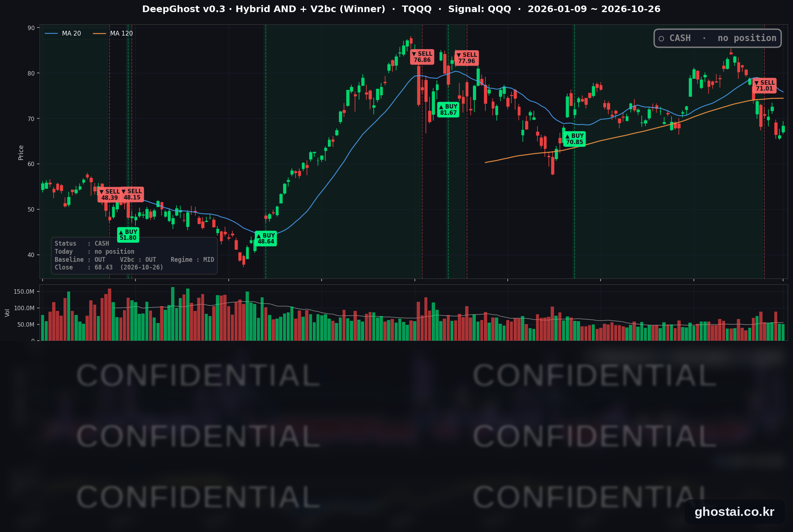

앤트로픽 상장 신청에 반도체주 반등, 나스닥 0.82% 상승
· Ghost.AI 데일리 리포트
👻 매일 시그널과 히스토리를 홈페이지에서 한눈에 → www.ghostai.co.kr
회원 페이지 안내 — 회원 가입하시면 커버리지 전 종목의 원본 시그널과 분석 레포트를 매일 확인하실 수 있습니다. 회원 페이지는 블로그·유튜브보다 먼저 업데이트됩니다. 지금 베타 회원을 받고 있으며, 이메일과 필명만으로 가입하실 수 있고 서비스 사용료는 받지 않습니다. 이메일 확인 후 바로 이용하실 수 있습니다.
한 줄 요약: 앤트로픽이 상장 신청 서류를 공개한 날 반도체·AI 하드웨어주가 크게 올라 나스닥 종합은 0.82%, S&P 500 은 0.70% 올랐습니다. FOMC 를 앞두고 10년물 국채 금리는 4.986% 로 거의 움직이지 않았습니다. 전략은 6거래일째 현금 보유 중이며 오늘 새 신호는 없습니다.
📊 오늘의 매매 신호
| 항목 | 내용 |
|---|---|
| 오늘의 신호 | 🟡 신규 신호 없음 — 전략은 현금 보유를 유지합니다 |
| 포지션 상태 | 💵 현금 보유 중 (OUT OF POSITION) |
| 현금 보유 기간 | 2026-10-19 ~ 2026-10-26 (6거래일) |
| TQQQ 종가 | $68.43(+3.23%) |
TQQQ 시그널 — OUT OF POSITION
현재 상태: 현금 보유 중 | 신규 신호 없음

전략은 10월 16일(금)에 나온 매도 신호에 따라 19일(월) 미국 장 시가 71.01달러에 TQQQ 를 매도했고, 오늘까지 6거래일째 현금 보유 중입니다. 8월 6일 시가 70.85달러에 매수해 51거래일 보유한 이번 거래의 전략 수익률은 +0.23% 입니다.
| 날짜 | TQQQ 종가 | 매도가(71.01달러) 대비 |
|---|---|---|
| 10/19(월) | $70.64 | -0.52% |
| 10/20(화) | $70.41 | -0.84% |
| 10/21(수) | $72.61 | +2.25% |
| 10/22(목) | $66.42 | -6.46% |
| 10/23(금) | $66.29 | -6.65% |
| 10/26(월) | $68.43 | -3.63% |
오늘 QQQ 가 1.11% 오르면서 TQQQ 는 3.23% 올라 68.43달러로 마감했습니다. 그래도 매도가보다 3.63% 낮고, 6월 2일 최고 종가(87.22달러)보다는 21.54% 낮습니다.
오늘 미국 시장 — 시황 요약
지수 마감
| 지수 | 종가 | 등락률 |
|---|---|---|
| S&P 500 | 7,676.77 | +0.70% |
| 나스닥 종합 | 26,169.38 | +0.82% |
| 다우존스 | 52,361.58 | +0.28% |
| 러셀 2000 (IWM) | 276.99 | +0.45% |
| QQQ (나스닥100) | 712.20 | +1.11% |
| TQQQ | 68.43 | +3.23% |
| 반도체 ETF (SOXX) | 491.83 | +2.85% |
주요 지수가 모두 올랐고, 반도체 비중이 큰 나스닥과 QQQ 의 상승 폭이 S&P 500 보다 컸습니다.
국채 금리 동향
| 만기 | 10/23 종가 | 10/26 종가 | 전일 대비 |
|---|---|---|---|
| 3개월 | 4.032% | 4.025% | -0.7bp |
| 5년 | 4.805% | 4.824% | +1.9bp |
| 10년 | 4.988% | 4.986% | -0.2bp |
| 30년 | 5.315% | 5.301% | -1.4bp |
FOMC 를 앞두고 만기별 금리 변화는 모두 2bp 이내였습니다. 5년물은 조금 오르고 30년물은 조금 내렸으며, 10년물은 사흘 연속 5% 아래에서 마감했습니다. 10년물과 3개월물의 차이는 96.1bp 로 역전은 없습니다. 오늘 주가 방향을 정한 재료는 금리가 아니라 AI 관련 기업 소식이었습니다.
연준 발언 & 금리 패스
- 발언 없음 — 10월 17일(토)부터 29일(목)까지 FOMC 전후 발언 금지 기간입니다.
- FOMC 는 27~28일 열리고, 금리 결정은 28일(수) 오후 2시(미 동부)에 나온 뒤 케빈 워시 의장의 기자회견이 이어집니다. 이번 회의에는 경제전망(SEP) 발표가 없습니다.
- 정책금리는 9월 16일 0.25%p 인상(만장일치) 뒤 3.75~4.00% 입니다. 여러 매체는 시장이 이번 회의에서 금리 동결을 예상한다고 전했습니다.
오늘의 핵심 이슈
- 앤트로픽 상장 신청 뒤 반도체·AI 하드웨어주가 올랐습니다. 보도에 따르면 앤트로픽은 미국 증권거래위원회에 상장 신청 서류(S-1)를 공개하고 나스닥에 'ANT' 로 상장하겠다고 밝혔으며, 서류에 적힌 올해 상반기 매출은 163억 달러였습니다. 이 매출 증가가 AI 투자 둔화 우려를 덜었다는 해석이 나왔습니다. S&P 500 구성종목 중 AI 하드웨어 관련 52종목은 48종목이 올라 등락률 중간값이 +2.49% 였고, 나머지 442종목은 +0.12% 로 보합권이었습니다.
- 커뮤니케이션 서비스 업종은 19종목 중 2종목만 올랐습니다. 메타는 AI 인프라 투자 자금으로 최대 950억 달러를 주식으로 조달하겠다고 발표했고 주가는 1.88% 내렸습니다. 엔비디아·AMD·브로드컴은 합계 최대 50억 달러어치를 사겠다는 의향을 밝혔습니다. 버라이즌은 연간 이익 전망을 올렸지만 3.49% 내렸고, 차터(-5.92%)·컴캐스트(-2.82%) 등 케이블주도 약세였습니다.
- 유가는 내렸고, 이번 주에는 큰 일정이 몰려 있습니다. 사우디아라비아 국방장관이 테헤란에서 이란 지도부와 긴장 완화를 논의했다는 보도 뒤 원유 ETF USO 는 1.95% 내렸습니다. 이번 주에는 FOMC(27~28일), 마이크로소프트·알파벳·아마존 실적(28~29일), 3분기 GDP·9월 PCE 물가(29일)가 이어집니다.
변동성 & 투자심리
VIX 는 19.45 에서 18.39 로 5.45% 내렸습니다. S&P 500 구성종목 494개 중 279개(56.5%)가 올랐습니다. CNN 공포탐욕지수는 10월 26일 값을 확인하지 못했고, 마지막으로 확인한 값은 10월 23일 기준 21(극단적 공포) 입니다. 지수와 VIX 는 나아졌지만 상승은 AI 하드웨어주에 몰렸고 나머지 종목은 보합권이었습니다.
매크로 & 원자재
| 품목 | 종가 | 등락률 |
|---|---|---|
| 원유 ETF (USO) | $166.23 | -1.95% |
| 금 ETF (GLD) | $367.82 | +0.33% |
- 유가: USO 는 10월 23일 기록한 올해 최고 종가(169.53달러)에서 내렸습니다.
- 금: GLD 는 이틀 연속 내린 뒤 0.33% 올랐습니다.
- 경제 지표: 댈러스 연은 10월 제조업 조사에서 신규 주문 지수는 9.3 으로 9월(30.7)보다 크게 낮아졌고, 원자재 가격 지수는 55.3 으로 9월(52.2)보다 올랐습니다.
주요 종목 동향
| 종목 | 종가 | 등락률 | 비고 |
|---|---|---|---|
| TSLA | 391.62 | +5.21% | 바클레이즈 투자의견 상향 |
| INTC | 90.47 | +4.04% | 10/29 장 마감 후 실적 |
| MU | 903.70 | +2.98% | |
| NVDA | 216.00 | +2.39% | 메타 주식 매입 의향 (3사 합계 최대 50억 달러) |
| AVGO | 329.17 | +2.33% | 메타 주식 매입 의향 |
| QCOM | 179.60 | +2.10% | |
| MSFT | 532.60 | +1.54% | 10/28 장 마감 후 실적 |
| AMZN | 249.09 | +0.44% | 10/29 장 마감 후 실적 |
| GOOGL | 316.80 | -1.06% | 10/28 장 마감 후 실적 |
| AAPL | 343.91 | -1.10% | |
| META | 630.56 | -1.88% | 최대 950억 달러 주식 발행 계획 |
| NFLX | 63.90 | -2.96% |
커버리지 12종목 중 8종목이 올랐습니다. 반도체 5종목(INTC·MU·NVDA·AVGO·QCOM)이 모두 2% 넘게 올랐고, 메타는 10월 21일 실적 발표 뒤 3거래일 동안 9.60% 내렸습니다.
다음 일정 (미 동부시간)
- 10/27(화) 10:00 콘퍼런스보드 10월 소비자신뢰지수 (9월 81.9), FOMC 첫날
- 10/28(수) 14:00 FOMC 금리 결정, 14:30 기자회견 / 장 마감 후 마이크로소프트·알파벳 실적
- 10/29(목) 08:30 3분기 GDP 속보치, 9월 개인소득·지출(PCE 물가) / 장 마감 후 아마존·인텔 실적
Ghost.AI — Quantitative AI Investment
Model: DeepGhost v0.3 | Transformer-Based Deep Learning
Coverage: 14 tickers | Updated every trading day after US market close
⚠️ 본 자료는 정보 제공 목적으로만 작성되었으며 투자 권유가 아닙니다. 모든 투자의 책임은 투자자 본인에게 있습니다. 과거 성과가 미래 수익을 보장하지 않습니다.
[유의사항]
- 본 서비스는 불특정 다수를 대상으로 발행되는 단방향 정보 제공 서비스이며, 투자자 개인의 재산 상황·투자 목적·위험 선호도를 반영한 개별 투자 조언이 아닙니다.
- 고스트에이아이 주식회사는 고객과 쌍방향 의사소통(개별 상담, 맞춤형 자문 등)을 제공하지 않습니다.
- 본 콘텐츠는 투자 권유 또는 매매 주문의 청약·청약의 권유에 해당하지 않으며, 최종 투자 판단 및 그에 따른 손익의 책임은 전적으로 투자자 본인에게 있습니다.
고스트에이아이 주식회사